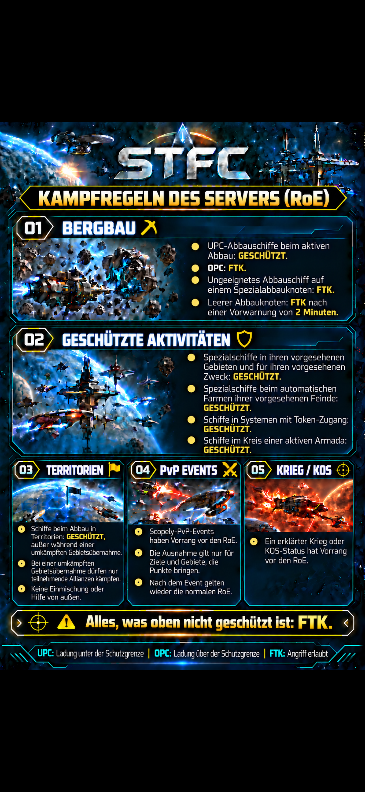

Willkommen bei der Imperialen Garde
Dieses Handbuch sammelt die wichtigsten Regeln, Vorgaben und Tipps unserer Allianz an einem Ort.
Allianzregeln

Mining & Ressourcen
Hier werden später G3/G4-Regeln, Mining-Gebiete und besondere Vorgaben eingetragen.
Kampf & PvP
Hier kommen später PvP-Regeln, Angriffs- und Verteidigungsvorgaben hinein.
Armadas
Grundsätzliches
🚀 Teilnahme
Nur eine begrenzte Anzahl von Spielern kann an einer Armada teilnehmen (2–7 Spieler). Je höher die Stufe des Armada-Kontrollzentrums, desto mehr Plätze stehen zur Verfügung.
Wenn du eine Armada starten möchtest, kündige sie im Allianz-Chat an.
Wenn du einer Armada beitreten möchtest, schreibe ein „+“ in den Allianz-Chat, um dich anzumelden.
Der Armada-Anführer vergibt einen ⭐ an die angemeldeten Spieler, sobald diese angekommen sind.
Ohne ⭐ werden schwächere Schiffe automatisch von stärkeren Schiffen aus der Armada verdrängt.
Kleine Armadas = kleine Schiffe. Die kombinierte Stärke aller Schiffe in der Armada sollte ungefähr 2/3 der Gesamtstärke der Armada betragen.
👥 Vergabe der Plätze
Oft gibt es mehr interessierte Spieler als freie Plätze. Daher gilt grundsätzlich:
Wer zuerst ein „+“ geschrieben hat, erhält den ⭐ und damit einen Platz in der Armada.
Ausnahme: Die Stärke der angemeldeten Schiffe reicht nicht aus, um die Armada zu besiegen. In diesem Fall kann der Armada-Anführer auch anderen Spielern einen ⭐ geben.
Bitte nehmt Rücksicht aufeinander.
🌑 Eclipse-Armadas
Für Eclipse-Armadas gilt bei Selten/Episch in den Exchange-Systemen:
- Ausschließlich das Schiff Stella verwenden.
- Die grünen Eclipse-Ziele können von jedem angeflogen werden.
- Wer eine Stella besitzt, muss diese auch einsetzen – unabhängig davon, ob die Armada grün, blau oder lila ist.
Die Anmeldung erfolgt wie bei normalen Armadas durch:
„+“ + Kürzel des Starters
⚠️ Wichtig: Pro Spieler darf nur ein Schiff für eine Armada angemeldet werden, damit bei mehreren gleichzeitig laufenden Armadas kein Chaos entsteht.
Ausnahme: Eine zweite Stella darf angemeldet werden, wenn dadurch verhindert werden soll, dass eine andere Eclipse-Armada mangels Teilnehmern platzt.
🟨🟥 Verstöße
Verstöße gegen diese Regeln werden zunächst mit einer Gelben Karte geahndet.
Beim zweiten Verstoß folgt die Rote Karte und der Ausschluss von Armadas .
Wird trotz Ausschluss weiterhin an Armadas teilgenommen, folgt der Ausschluss aus der Allianz .
Armadaformationen
Hier können später bewährte Armadaformationen dargestellt werden.
Tipps für Crews
Crew-Empfehlungen für Farming, PvE, PvP und besondere Situationen.
Events & Vorgaben
Hier kommen später Allianz-Events, Eventregeln und besondere Vorgaben hinein.
Spezialschiffe
Dieser Bereich kann später um einzelne Spezialschiffe, Einsatzgebiete und Tipps erweitert werden.
FAQ
Häufige Fragen und kurze Antworten für Mitglieder.